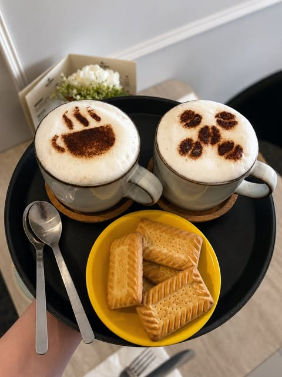
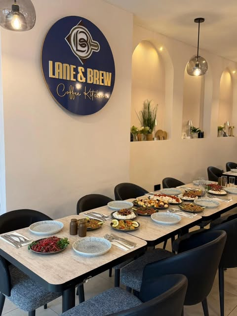
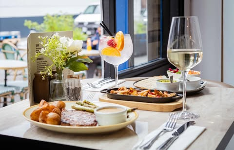
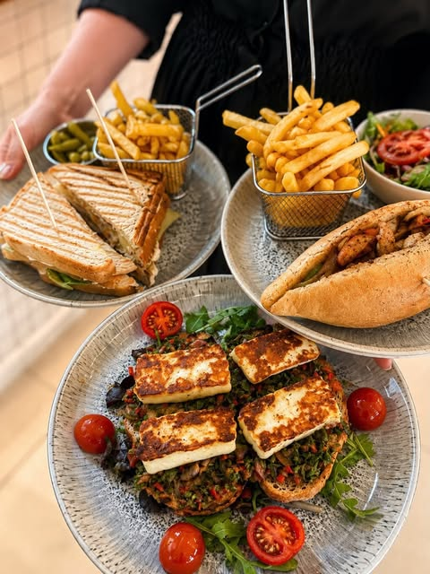
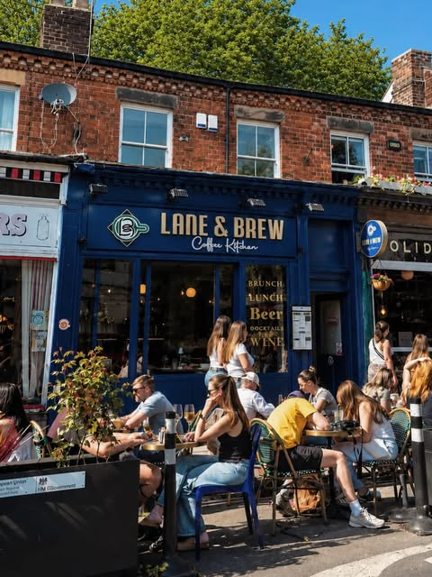

01 / FROM THE FIRST CUP
Coffee & brunch
Slow mornings start here.
83 LARK LANE · LIVERPOOL
Good coffee, food worth making time for and a table waiting on Lark Lane. Come in for brunch. Stay for lunch, or something to sip later.


Come for the coffee. Stay for the company.
LARK LANE / LIVERPOOL01 / WHAT'S ON THE TABLE
From the first cup to a long lunch and an evening catch-up, there’s plenty of reason to pull up a chair.
See the latest on Instagram
Slow mornings start here.

Menu, specials and service times can change. Check the restaurant's latest updates before visiting.
VIEW INSTAGRAM
83 LARK LANE · LIVERPOOL02 / OUR CORNER OF LIVERPOOL
Across from the bustle and just a short walk from Sefton Park, our navy frontage makes a familiar stop for coffee, good food and a catch-up.
Meet a friend, bring the family or take a seat outside when the weather's right.
Come and find us03 / COME ON IN
Check Instagram for current hours, the latest menu and any changes to service.
@laneandbrew ↗